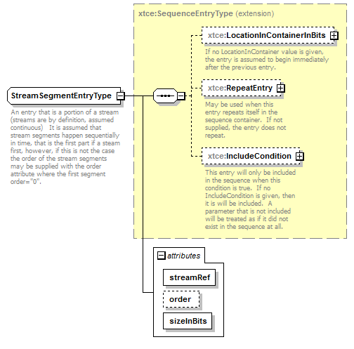

| diagram |  | ||||||||||||||||||||||||
| namespace | http://www.omg.org/space/xtce | ||||||||||||||||||||||||
| type | extension of xtce:SequenceEntryType | ||||||||||||||||||||||||
| properties |
|
||||||||||||||||||||||||
| children | xtce:LocationInContainerInBits xtce:RepeatEntry xtce:IncludeCondition | ||||||||||||||||||||||||
| used by |
|
||||||||||||||||||||||||
| attributes |
|
||||||||||||||||||||||||
| annotation |
|
||||||||||||||||||||||||
| source | <complexType name="StreamSegmentEntryType"> <annotation> <documentation xml:lang="en">An entry that is a portion of a stream (streams are by definition, assumed continuous) It is assumed that stream segments happen sequentially in time, that is the first part if a steam first, however, if this is not the case the order of the stream segments may be supplied with the order attribute where the first segment order="0".</documentation> </annotation> <complexContent> <extension base="xtce:SequenceEntryType"> <attribute name="streamRef" type="xtce:NameReferenceType" use="required"/> <attribute name="order" type="positiveInteger"/> <attribute name="sizeInBits" type="positiveInteger" use="required"/> </extension> </complexContent> </complexType> |
| type | xtce:NameReferenceType | ||
| properties |
|
||
| source | <attribute name="streamRef" type="xtce:NameReferenceType" use="required"/> |
| type | positiveInteger |
| source | <attribute name="order" type="positiveInteger"/> |
| type | positiveInteger | ||
| properties |
|
||
| source | <attribute name="sizeInBits" type="positiveInteger" use="required"/> |